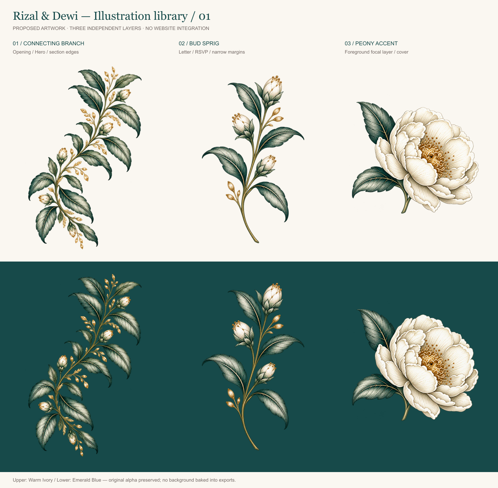

Illustration library — review
Proposed artwork. Existing site is unchanged. Three standalone transparent layers; no articulated petal or wing rig.

Independent layer assembly
Static by default. Reduced motion stays static. This assembly demonstrates layering, not approved website composition.